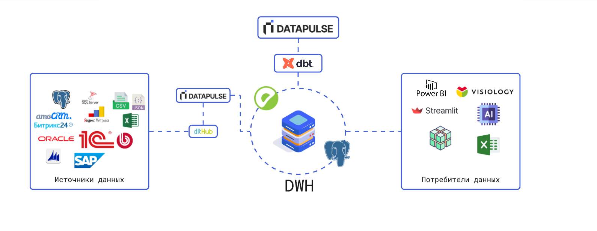

Что такое Datapulse?
Datapulse - это фреймворк для работы с хранилищем данных (DWH). Он поможет Вам собирать данные из различных источников, трансформировать их и применять лучшие практики.
Datapulse берет на себя многие технические задачи, позволяя вам сконцентрироваться только на бизнес-логике и сократить время на внедрение. Он значительно сокращает время разработки ETL-pipeline за счет автоматизации многих процессов, а также позволяет внедрять стандарты разработки и упрощает совместную работу над моделями данных.

Datapulse является надстройкой над хранилищем данных (DWH). Работает в паре с такими зарекомендовавшими себя на рынке инструментами, как dbt и dlt.
dbt
dbt (data build tool) — это инструмент для трансформации данных с помощью SQL, который позволяет применять принципы разработки ПО (тестирование, версионирование, модульность) в аналитике. С его помощью команды могут совместно работать над моделями данных, автоматизировать пайплайны и поддерживать единые бизнес-метрики.
В dbt нет графического (GUI) интерфейса, что усложняет его использование для не технических пользователей (data-аналитики). Datapulse является таким интерфейсом, а также имеет расширенный функционал.
Datapulse упрощает процесс разработки
- Сокращает трудозатраты на разработку DWH
- Снижает порог входа (аналитики только со знанием SQL смогут разрабатывать модели данных и отчетные витрины)
- Легкая интеграция с другими инструментами (airflow, git и т.д.)
- Элементарное внедрение (python-библиотека)
Основные фичи Datapulse
Как пользователь, ваша основная задача — писать SELECT-запросы, которые реализуют бизнес-логику. Datapulse преобразует эти SELECT-запросы в таблицы или представления (views) в вашем хранилище данных.
| Фича | Описание |
|---|---|
| Материализация SQL | На основе вашего SELECT-запроса формирует обновляемые модели. |
| Парсинг SQL | Парсит полученный SQL-запрос и автоматически формирует документацию. |
| Data catalog | Интерактивный data catalog. |
| Модель данных DataVault | Автоматическая генерация ETL для DataVault 2.0. |
| Качество данных | Широкий набор преднастроенных проверок качества данных |
| Сбор данных | Широкие возможности по сбору данных из различных источников. |
| Чат с DWH | Общение с DWH на основе естественного языка с использованием ИИ. |
Модули
Datapulse - модульный фреймворк.
Ядром является конструктор моделей dbt. И есть модули, которые могут быть дополнительно подключены.
| Модуль | Описание |
|---|---|
| Конструктор DataVault | Low-code конструктор модели данных по методологии DataVault |
| Экстрактор данных | Low-code экстрактор данных из различных систем-источников (в разработке) |
| Качество данных | Проверка качества данных над моделями dbt |
| Чат с DWH | Отправка SQL-запросов к DWH с помощью естественного языка на основе ИИ (в разработке) |